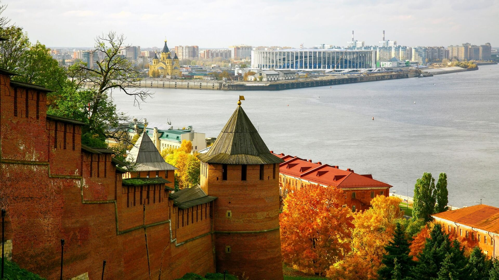
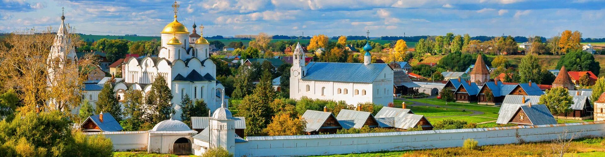

5 экскурсий
•
500+ туристов
•
с 2015 года

Мы не идём по шаблону — каждая экскурсия уникальна. Наши гиды — местные историки и краеведы, которые знают город изнутри.
Максимум 10 человек в группе — чтобы каждый мог услышать гида, задать вопрос и получить внимание.
Каждая экскурсия — это не лекция, а разговор с городом. Мы рассказываем о людях и событиях, а не просто о датах и фактах.
Дорогие друзья! Мы рады приветствовать вас на сайте турагентства «Волжские просторы». Наша команда с любовью создаёт маршруты, которые раскрывают душу Нижнего Новгорода — города с богатейшей историей, уникальной архитектурой и неповторимым волжским характером. Мы хотим, чтобы каждый гость почувствовал атмосферу этого удивительного места и увёз с собой незабываемые впечатления. Присоединяйтесь к нашим экскурсиям — и откройте для себя Нижний Новгород с новой стороны!
Узнавайте первыми о новых экскурсиях и акциях